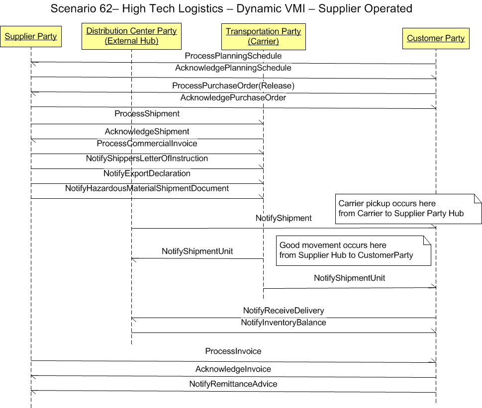

Scenario
62 - High Tech Logistics - Dynamic VMI - Supplier Operated
62.0
Overview
Scenario #62
describes the integration scenario for supplier party applications to
integrate with transportation party (Carrier), distribution center
party (External Hub) and customer party applications to accomplish a
supplier operated dynamic vendor managed inventory (VMI) process.
The
purpose of this scenario is to enable the visualization of the
participants in the process and the dialogs between them for this
specific integration. This scenario is not meant to be the only model
for integrating general ledger applications to a budget
applications. This is simply one model that may be used to guide one's
own integration efforts.
62.1
Scenario
The scenario
below contains the participants involved in the
interaction, the dialog flows or conversation between them, certain
assumptions about the sequence of events, and assumptions about the
technical approach, for example, publish and subscribe.
This
is a model to be used as a design recommendation, not a required
approach.

62.2
Assumptions
This
scenario assumes a loosely coupled, asynchronous approach with
transaction management required but not
explicitly defined.
It also presumes that this scenario can be applied as a B2B interaction
between enterprises, as an internal A2A exchange within an enterprise
or as an B2M exchange from a business to a mobile device following the
same canonical business messaging model.
62.3
Participant Definitions
This
scenario contains four participants or roles:
- Supplier
party
- Distribution
center party (External Hub)
- Transportation
arty (Carrier)
- Customer
party
The
definitions and
details of these participants are
left to the designer but are assumed to contain the functionality as
defined by what is commonly sold in the commercial market place today.
This
definition is broadly accepted by the scenario designers and is a
direct result of the decision not to
define how the
processing takes place within any individual application.
Each
application must be
able perform the services defined by the message BOD (business object
document), but the internals of the application are not
required or
desired to be exposed at this level of standardized abstraction.
The
most important factors in defining these participants is to ensure
that an integration designer can communicate the requirements
precisely
enough to detail the interfaces needed and their interrelationships.
62.4
Business Workflow (Sequence)
The
business workflow is graphically represented by starting at the
Scenario top and reading from top down and from left to right.
This scenario
contains the following events in the workflow sequence:
- Communicate a request to process an planning schedule to the supplier
- Indicate the acceptance or
rejection of the planning schedule from the supplier
- Communicate a request to
process a purchase order to the supplier
- Indicate the acceptance or rejection
of the purchase order from the supplier
- Communicate a request to pickup a shipment from
the supplier to the transportation party (Carrier)
- Indicate the acceptance or rejection of the shipment from the carrier
- Communicate the commercial invoice from
the supplier to the carrier
- Communicate the shippers letter of iInstruction from the supplier to the carrier
- Communicate the export declaration from the supplier to the carrier
- Communicate the hazardous material shipment document from the supplier to the carrier
- Carrier performs a pickup
- Communicate that the shipment is leaving from
the distribution center (External Hub) to the
Customer
- Communicate an update of a shipment unit from
the carrier to both the customer and the external hub
- Communicate
the receipt of a delivery from the customer to the external hub
- Communicate the inventory balance from the customer to the external hub
- Communicate a request to
process an invoice to the customer
- Indicate the acceptance or
rejection of the invoice from the customer
- Communicate that the customer has
initiated the payment and the supplier can expect to receive payment.
62.5
Exception Handling
Exception
handling is highly localized as the result of an implementation's
infrastructure, managment and business rules. As such, this section of
the Scenario is planned to be used as a
guide to help understand the additional intent of this Scenario
designers. If no exceptions are noted here, then it can be assumed that
the Scenario designers agreed that the Scenario is straight forward and
has no additional neeeds:
- Note
that the Confirm BOD is not shown in the scenario and that it is the
most obvious method for
providing an application level exception and feedback mechanism between
business
software components. Full Confirm BOD use is described in other OAGIS
documentation in detail, but it should be noted that the specific use
of the Confirm
BOD may vary significantly from scenario to scenario and from
integration to integration.
The
Confirm BOD is typically intended to be used by the recieving
application to communicate to the sending application that the
information
it sent in the message BOD was received and understood and can be
processed.
If the
information was not
received or not understood, or contained errors of any type, it is
accepted practice for OAGIS to presume that the data was
not acted on and in the abscense of a Confirm BOD within an agreed to
time limit to resend.
As errors and assumptions are the bane of any implementation,
it is strongly recommended that the Confirm BOD be used to prevent this
potential problem althought it is not a requirement by OAGIS.
Copyright
OAGi 2016 - All Rights Reserved --
OAGIS
release 10.3 - Document Number: 20160901-62 |